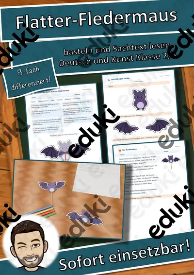
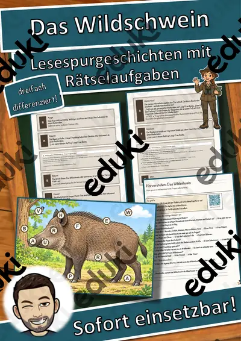
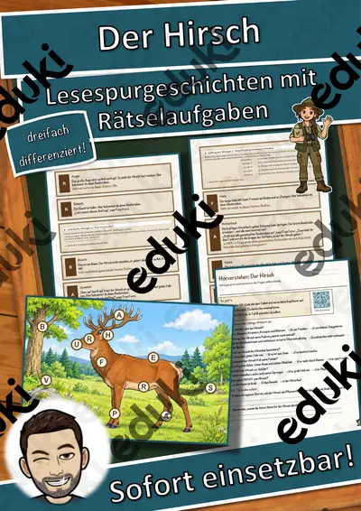
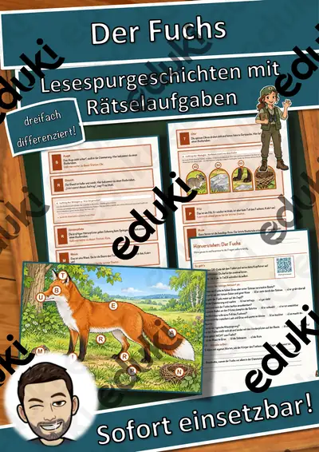
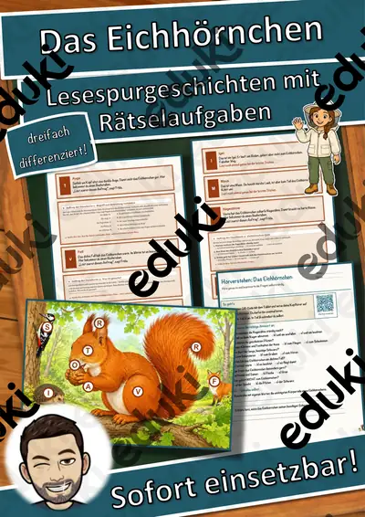
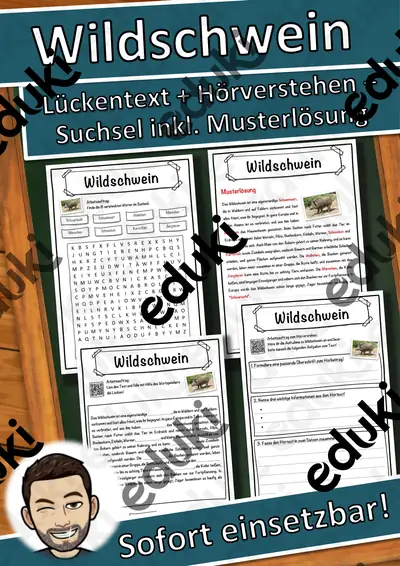
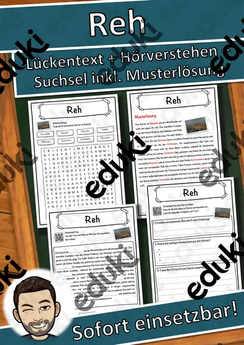

Säugetiere: Arbeitsblätter für Klasse 3–8 (Biologie)
Säugetiere sind die Tiergruppe, die Kinder am besten kennen. Der Lehrplan nutzt sie, um Merkmale wie Fell, Lebendgeburt und Säugen zu klären und Lebensräume zu vergleichen.
Als roter Faden eignen sich Merkmale, Fell und Haut und Lebensraum; Nahrung, Fortpflanzung und Anpassung lassen sich je nach Klassenstufe zuschalten.
Die Lehrpläne der Länder sehen das Thema im Fach Biologie vor, in der Regel in den Klassen 3 bis 8. Als Ziel gilt: die Schülerinnen und Schüler nennen Merkmale und erstellen Steckbriefe einzelner Arten.
Für den Einstieg in Säugetiere bieten sich Aufgaben zu Merkmale an, zum Üben solche zu Fell und Haut und Lebensraum, zur Wiederholung vor einer Lernkontrolle ein Blick auf Anpassung. Die Lösungen liegen bei, sodass im Unterricht niemand nachschlagen muss. Leistungsstarke und schwächere Lesende erhalten über die Lesespurgeschichten Texte in drei Stufen.
54 passende Materialien stehen bereit, etwa Herbst-Klappkarte Eichhörnchen, Flatter-Fledermaus am Stab und Peter und der Wolf. Vertreten sind 10 Lesespurgeschichten, 2 Bastelvorlagen und 42 Lückentexte mit Hörverstehen; die Stufen reichen über Klasse 2–8. Ein Tiersteckbrief mit gleicher Gliederung für alle macht Vergleiche einfach.
Das gehört zum Thema
Passende Arbeitsblätter und Materialpakete

Herbst-Klappkarte Eichhörnchen – Figurenkarte basteln mit Sachtext, 3-fach differenziert (Tiere im Herbst, Klasse 2/3)

Flatter-Fledermaus am Stab – bewegliche Bastelfigur mit Sachtext, 3-fach differenziert (Halloween/Herbst, Klasse 2/3)

Peter und der Wolf – jede Figur hat ihr Instrument – Lesespurgeschichte mit Rätselaufgaben (Klasse 3)

Der Dachs – Lesespurgeschichte mit Rätselaufgaben (Klasse 8)

Das Wildschwein – Lesespurgeschichte mit Rätselaufgaben (Klasse 8)

Der Luchs – Lesespurgeschichte mit Rätselaufgaben (Klasse 8)

Der Delfin – Lesespurgeschichte mit Rätselaufgaben (Klasse 8)

Der Hirsch – Lesespurgeschichte mit Rätselaufgaben (Klasse 8)

Der Fuchs – Lesespurgeschichte mit Rätselaufgaben (Klasse 8)

Der Maulwurf – Lesespurgeschichte mit Rätselaufgaben (Klasse 5)

Das Eichhörnchen – Lesespurgeschichte mit Rätselaufgaben (Klasse 5)

Die Fledermaus – Lesespurgeschichte mit Rätselaufgaben (Klasse 5)

Sibirischer Tiger Lückentext mit Wortspeicher Hörverstehen und Suchsel

Yak Lückentext mit Wortspeicher Hörverstehen und Suchsel

Zebras Lückentext mit Wortspeicher Hörverstehen und Suchsel

Wildschwein Lückentext mit Wortspeicher Hörverstehen und Suchsel

Wildkatze Lückentext mit Wortspeicher Hörverstehen und Suchsel

Waschbär Lückentext mit Wortspeicher Hörverstehen und Suchsel

Wales Lückentext mit Wortspeicher Hörverstehen und Suchsel

Wale Lückentext mit Wortspeicher Hörverstehen und Suchsel

Tiger Lückentext mit Wortspeicher Hörverstehen und Suchsel

Robben Lückentext mit Wortspeicher Hörverstehen und Suchsel

Reh Lückentext mit Wortspeicher Hörverstehen und Suchsel

Pandas Lückentext mit Wortspeicher Hörverstehen und Suchsel
Weitere 30 Materialien zum Thema im Material-Finder.
Häufige Fragen
Für welche Klassenstufe passen die Arbeitsblätter zu Säugetiere?
Die 54 Materialien zu diesem Thema sind für Klasse 2–8 ausgelegt, die meisten davon für Klasse 6. Einzelne Titel lassen sich mit Anpassung auch eine Stufe darunter oder darüber einsetzen.
Welche Inhalte decken die Materialien zu Säugetiere ab?
Inhaltlich reicht die Auswahl von Merkmale über Fell und Haut und Lebensraum bis zu Fortpflanzung; Details stehen bei den einzelnen Materialien.
Wie setze ich Säugetiere im Unterricht ein?
Ein Tiersteckbrief mit gleicher Gliederung für alle macht Vergleiche einfach. Danach genügt meist ein Material als Einstieg und eines zum Üben.
Mehr Material nach Fach und Klasse
- Alle Materialien Biologie
- Arbeitsblätter Biologie Klasse 3
- Arbeitsblätter Biologie Klasse 4
- Arbeitsblätter Biologie Klasse 5
- Arbeitsblätter Biologie Klasse 6
- Arbeitsblätter Biologie Klasse 7
- Arbeitsblätter Biologie Klasse 8
- Unterrichtsmaterial Klasse 3
- Unterrichtsmaterial Klasse 4
- Unterrichtsmaterial Klasse 5
- Unterrichtsmaterial Klasse 6
- Unterrichtsmaterial Klasse 7
- Unterrichtsmaterial Klasse 8
Verwandte Lehrplanthemen
- Fische und Meerestiere (Biologie, Klasse 4–8)
- Körper, Skelett und Muskeln (Biologie, Klasse 2–7)
- Reptilien und Amphibien (Biologie, Klasse 4–8)
- Sinnesorgane (Biologie, Klasse 2–8)
- Atmung, Verdauung und Organe (Biologie, Klasse 5–9)